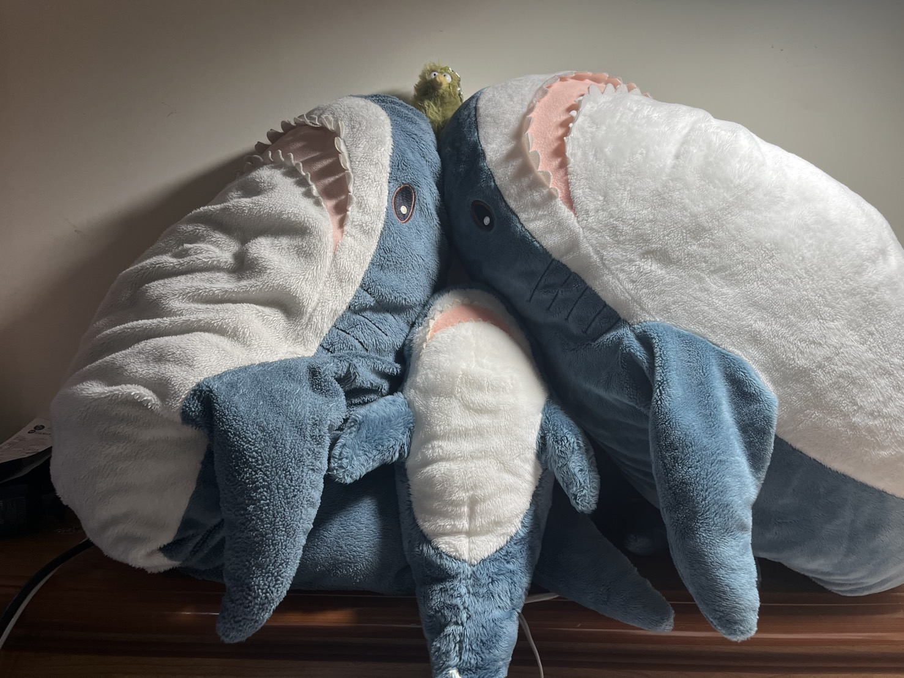

泰迪熊
柔軟可愛的泰迪熊，是最受歡迎的玩偶之一。適合擁抱，給予溫暖的陪伴。
兔子玩偶
長耳朵的可愛兔子，毛絨絨的觸感讓人愛不釋手。是居家裝飾的最佳選擇。
企鵝玩偶
圓滾滾的企鵝造型，黑白配色經典可愛。是收藏家最愛的玩偶之一。

企鵝玩偶
圓滾滾的企鵝造型，黑白配色經典可愛。是收藏家最愛的玩偶之一。

企鵝玩偶
圓滾滾的企鵝造型，黑白配色經典可愛。是收藏家最愛的玩偶之一。
企鵝玩偶
圓滾滾的企鵝造型，黑白配色經典可愛。是收藏家最愛的玩偶之一。

熊貓玩偶
可愛的熊貓造型，黑白配色經典可愛。是收藏家最愛的玩偶之一。

兔子玩偶
柔軟的兔子玩偶，粉紅色的耳朵和尾巴。是小朋友最愛的玩偶之一。
小狗玩偶
可愛的小狗造型，棕色的毛髮和大耳朵。是家庭寵物的最佳替代品。
小貓玩偶
溫柔的小貓造型，灰色的毛髮和綠色的眼睛。是貓咪愛好者的最愛。
小熊玩偶
經典的小熊造型，棕色的毛髮和圓圓的耳朵。是所有年齡層的最愛。
長頸鹿玩偶
高大的長頸鹿造型，黃色的毛髮和棕色的斑點。是動物園愛好者的最愛。